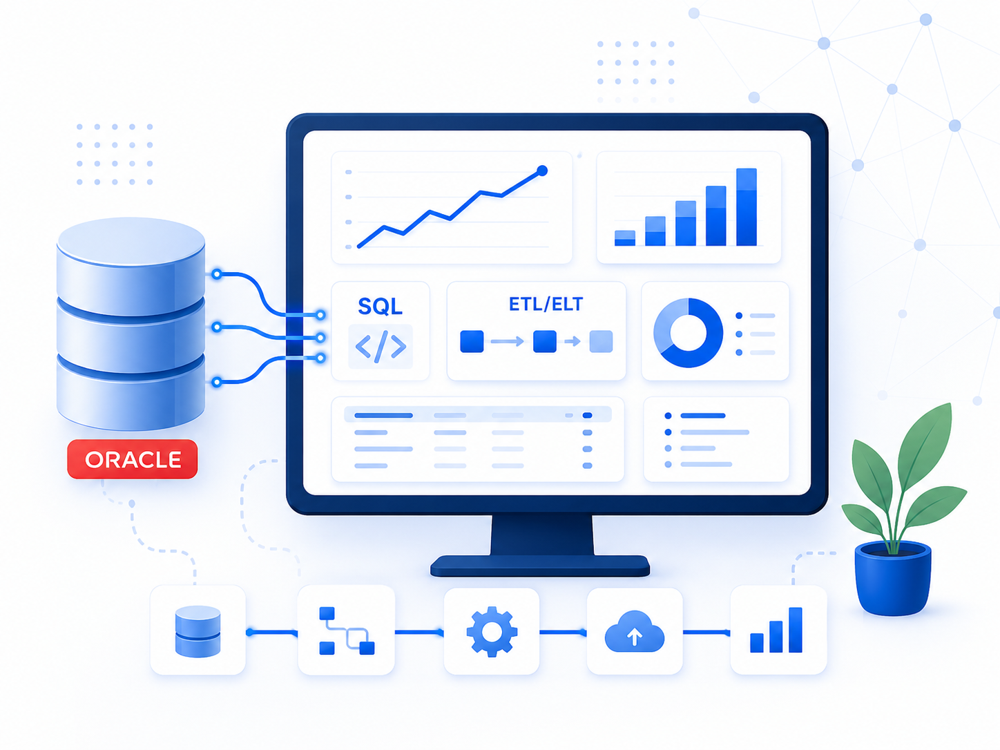
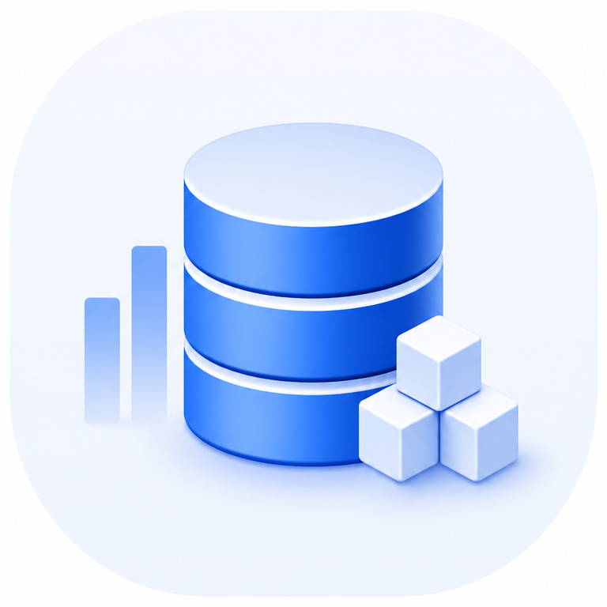
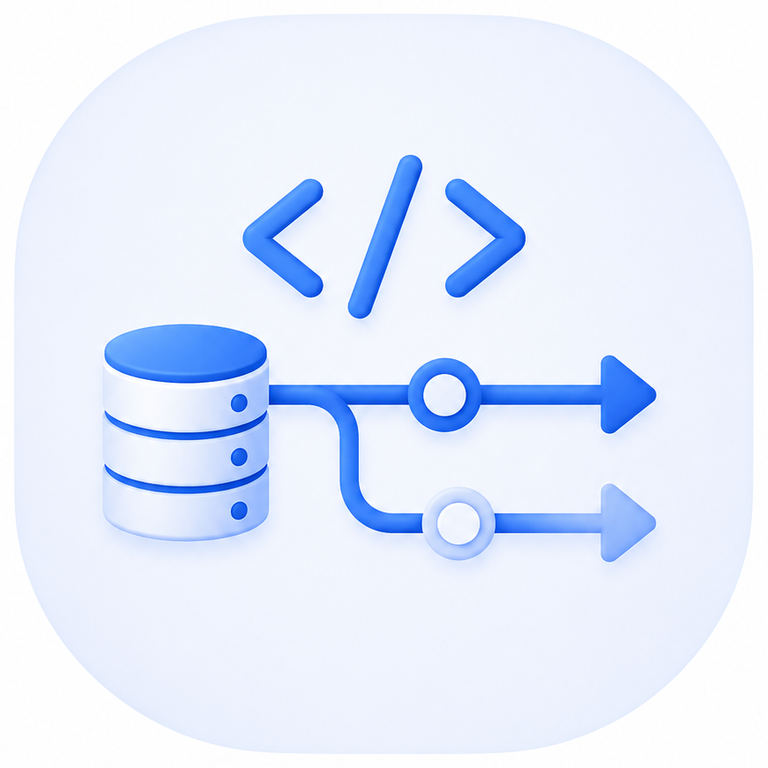
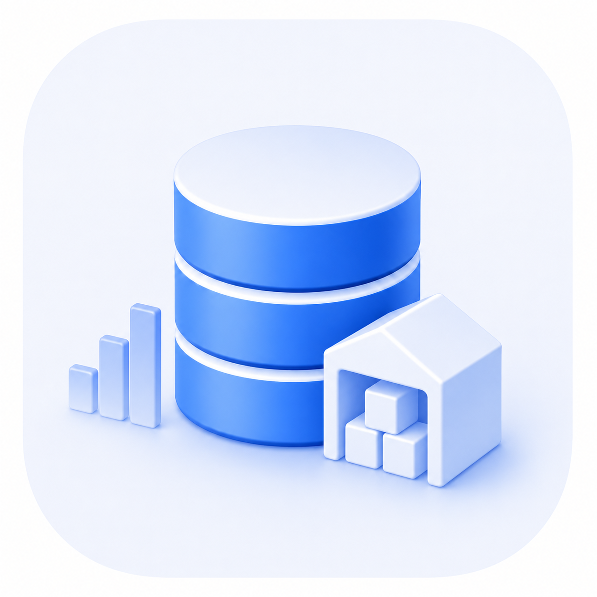
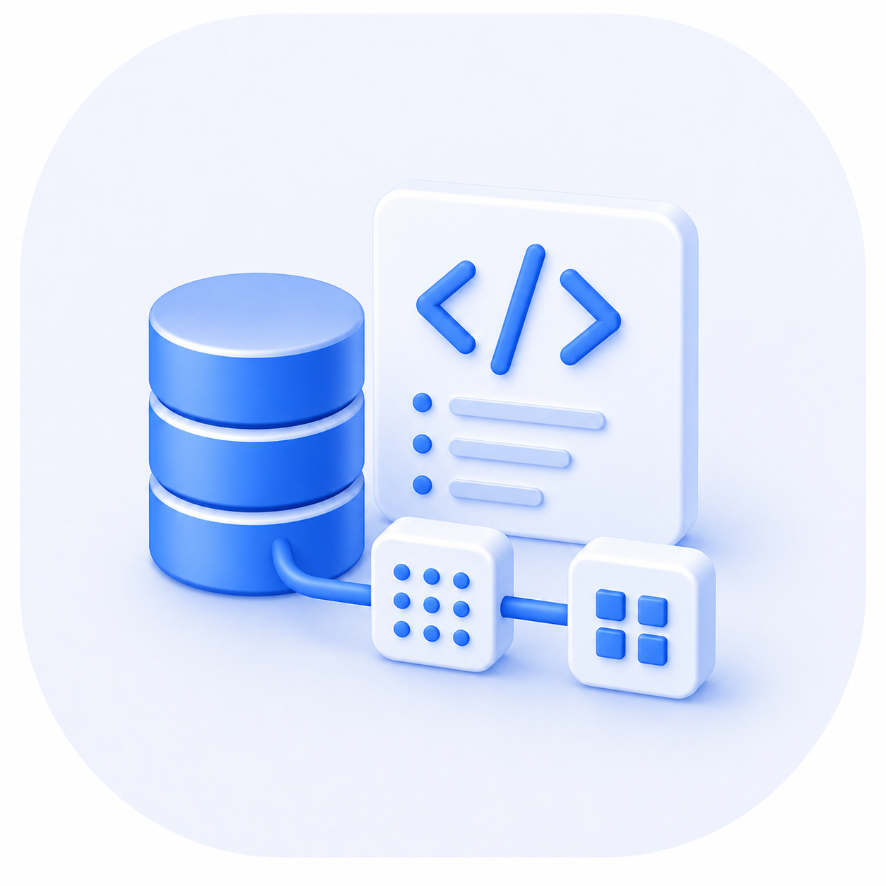
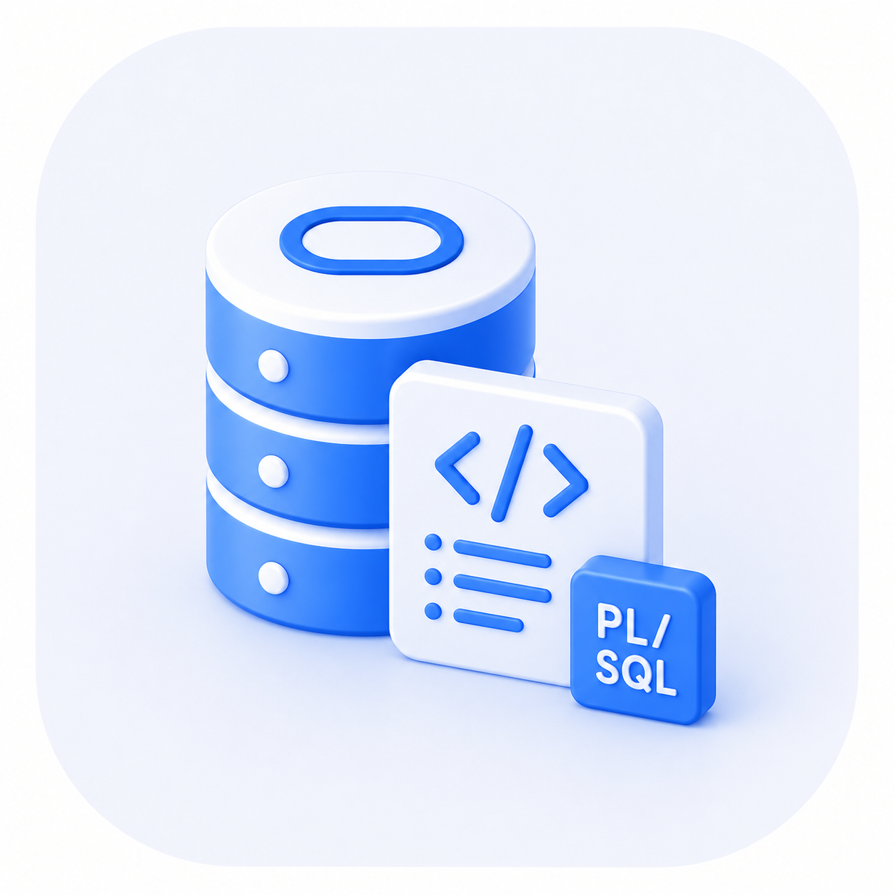

years IT Operations
Systems operations, troubleshooting and enterprise systems thinking.
With more than 15 years of enterprise IT experience, I work as an Oracle DWH Developer. I build SQL-based data processing, data publishing and ETL/ELT-style workflows with a systems-oriented mindset. I turn complex source data into verifiable, reliable and usable information for data publication, reporting and downstream use.


Oracle DWH development
SQL and ETL/ELT data flowsMy enterprise IT background, Oracle DWH development experience and modern data engineering mindset form a connected professional path built on systems thinking, SQL-based data processing and focused hands-on growth.
Systems operations, troubleshooting and enterprise systems thinking.
SQL-based data flows, data publications and reporting data sources.
PL/SQL, Python, data pipeline thinking and documented hands-on projects.
My work focuses on reliable, verifiable and business-usable data flows. I build on Oracle DWH development, SQL-based data processing and the systems mindset gained from IT operations, while extending this foundation toward modern data engineering.

Target structures, reporting data sources, data publications and development work fitted into existing DWH layers.

Complex queries, transformations, source-to-target checks, and handling historical and current-state data.
Incremental and full reloads, chainable processes, validations and maintainable data processing logic.
GitHub-ready practice materials, SQL exercises, labs and clear technical documentation.
Deepening PL/SQL, Python-based data processing, data pipeline thinking and project-based practical growth.
Troubleshooting, infrastructure and security-aware thinking built on 13+ years of IT Operations experience.
My IT operations background taught me to understand systems end to end. As an Oracle DWH developer, I use that mindset when building target structures, SQL transformations, data flows, reporting sources and system-to-system data transfer components.

A multi-source extraction lab across Oracle, SQL Server, PostgreSQL, MySQL, IBM Db2, and a manual CSV source, with controlled export logic and detailed test evidence.
Open project →
A practical comparison lab across six RDBMS environments with shared sample data, consistent SQL tasks, and documented syntax differences.
Open project →
An isolated Hyper-V-based lab for controlled Codex CLI testing. The repository documents security boundaries, manual approval, independent verification, and the first recorded test run.
Open project →Learning the concepts, tools and operating logic needed for the next practical step.
Building practical labs, database environments, data flows and technical solutions.
Clear documentation of implementation steps, decisions, tests and results.
Publishing working, verified materials and sharing the knowledge gained.
Refinements based on feedback, tests and review checks.

Targeted strengthening of my Oracle DWH development experience through server-side logic and data processing components.
Python, data pipeline thinking, source-to-target validation and documented hands-on practice materials.
Linux, networking, infrastructure, cybersecurity and AI as complementary technical background.
You can find my contact details on the Contact page.